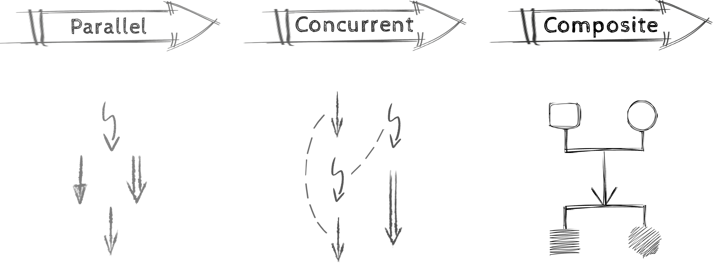
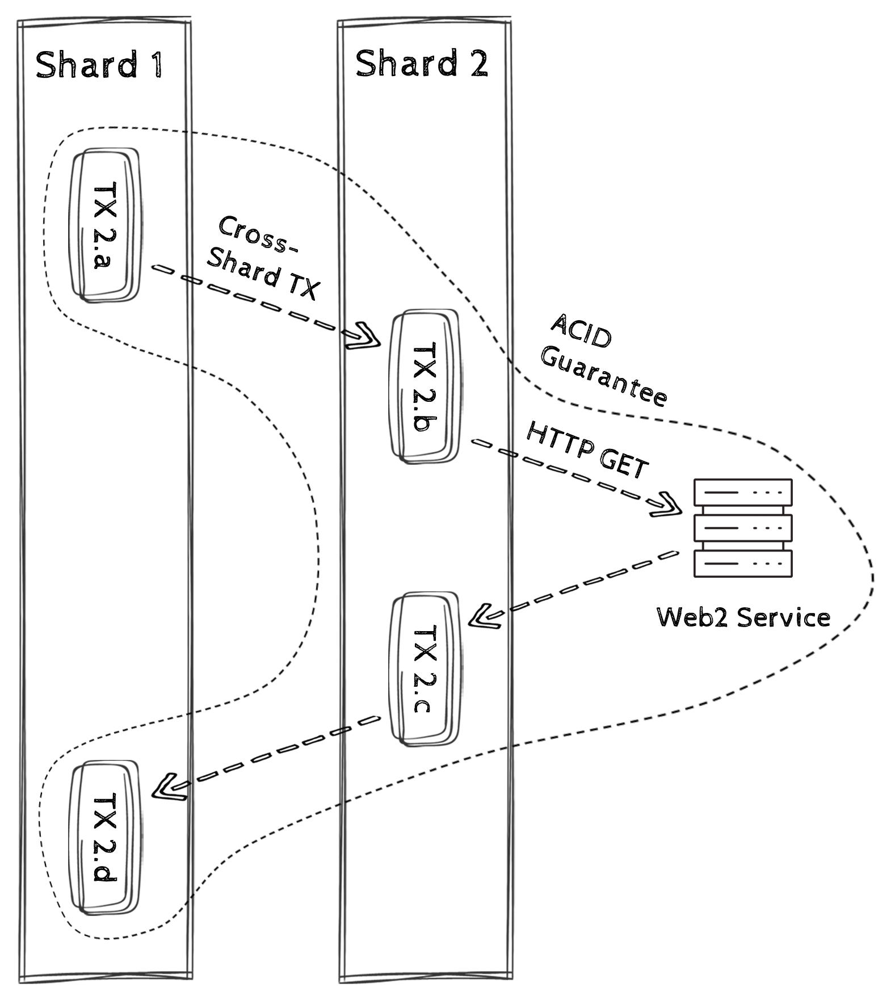

The Problem We Are Solving
Many blockchain VMs focus on short, ordered state updates. ALUX extends that model for workflows that need to wait, resume, coordinate, or cross block boundaries.
- Blockchains are essentially state transition machines.
- Many current blockchain VMs focus on a narrower class of short, ordered transitions.
Takeaway: many chains center on short state updates; ALUX adds replayable long transactions.
ALUX as a Distributed Runtime for Long Transactions
ALUX models parallel, concurrent, and composite transition patterns beyond one-shot state updates.
Instead of treating every transaction as a short isolated state update, ALUX models execution as a runtime that can coordinate parallel, concurrent, and composite transitions.

Takeaway: parallelism advances independent work, concurrency enables wait and resume, and composition defines how related effects should settle together.
Execution Model
Parallel Execution
Isolated EVM instances can run in parallel today. WASM belongs to the planned heterogeneous-VM direction.
Concurrent Execution
ALUX allows TXs to execute as coroutines, which can be suspended, awakened, and interleaved with each other. Nondeterministically executed, but deterministically replayed.
Composite Transitions
TXs can span block heights and coordinate on-chain work with replayable HTTPS effects while preserving isolation and atomic settlement inside the ALUX transaction boundary. Cross-shard composition remains part of the architecture and roadmap.
Composite Transitions and Compatibility
TXs can span block heights and coordinate on-chain work with replayable HTTPS effects while preserving isolation and atomic settlement inside the ALUX transaction boundary. Cross-shard composition remains part of the architecture and roadmap.
ALUX exposes an EVM path today through its sandbox and Ethereum JSON-RPC. WASM and broader heterogeneous-VM composition are planned; the current baseline does not ship them.

Takeaway: ALUX supports cross-block execution and replayable Web 2 I/O today; cross-shard composition remains planned.
In short, ALUX does not force every workflow into a short transaction. It makes long transactions that cross blocks and connect to Web 2 replayable today, while cross-shard and broader cross-runtime composition remain part of the architecture and roadmap.